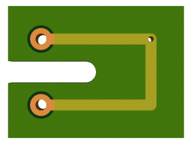
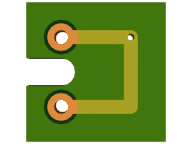
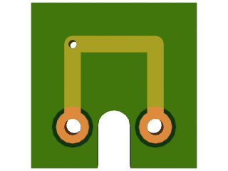
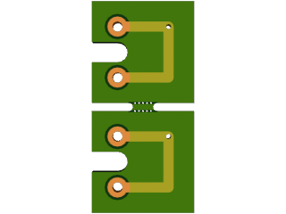
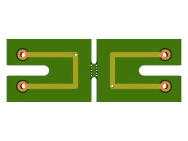
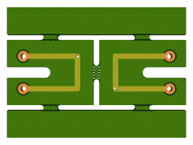
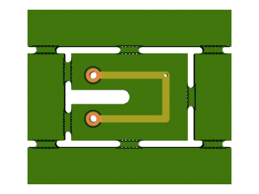
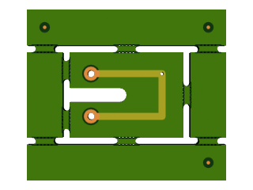
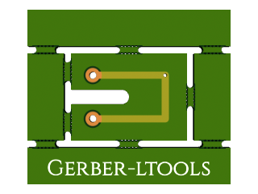
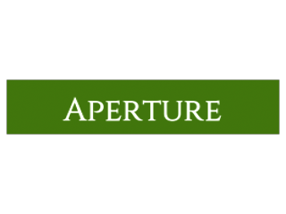

A set of libraries and tools to manipulate PCB data files
A set of libraries and tools to manipulate PCB data files
Here are some progressively more complex example scripts showing how you can use gerber-ltools.
The first step when using gerber-ltools usually consist in loading some board that you exported from your CAD software. First you need to load the boards module:
local boards = require 'boards'
Then to load a board you use the boards.load function:
local simple = assert(boards.load('./simple'))
This will simply print all the corresponding Gerber and Excellon file names, and validate the data (ie. if there is some loading error, you should get an error message). In all examples below we start from this simple board, which looks like that:

The final step of any manipulation script usually involves saving your board data. The function to call is boards.save:
local simple = assert(boards.load('./simple'))
assert(boards.save(simple, './save'))
However when you combine several boards into one (like in the panelization examples below), some data in the board may get duplicated, for example aperture definitions. To save on disk space a bit, and more importantly to simplify output files, it is a good idea to merge all identical apertures before saving:
boards.merge_apertures(simple)
assert(boards.save(simple, './save'))
As expected the output is identical to the input:

One common manipulation of boards consist in rotating them, for example because they are not square and better fit in another direction. Rotation and most manipulation are in the boards.manipulation module:
local manipulation = require 'boards.manipulation'
To rotate a board call manipulation.rotate_board with the board and a direct angle value in degrees as arguments:
local rotate = manipulation.rotate_board(simple, 90)
assert(boards.save(rotate, './rotate'))
The result is the same board as above, but rotated 90°:

One of the most important features of gerber-ltools is its ability to panelize boards, ie. to assemble several boards into a larger one. This is probably why you want to use gerber-ltools. The module you need for that is boards.panelization:
local panelization = require 'boards.panelization'
There you will find a panelization.panelize function that receives a layout table, an options table, a top-level orientation and that returns a new board object for the panel.
local simple = assert(boards.load('./simple'))
local panel = assert(panelization.panelize({ simple, simple }, {}, true))
boards.merge_apertures(panel)
assert(boards.save(panel, './panel'))
Here the layout contains two copies of the simple board. These are actually Lua references, but since we don't modify them during panelization you can reuse the same board object several times. The options table is empty to use the defaults. The third argument true means the panel top-level is vertical. We're making a vertical panel because the simple board has a slot on its left side which would prevent the insertion of a break tab.
The resulting panel looks like that:

As you can see the panelize function automatically placed the sub-boards with a 2 mm gap, and it created a break tab to connect the two boards.
Of course you can combine the above operations to first modify the board, and then use the modified copy in a panel. Since our simple board has a slot on its left, we'll create a rotated copy with the slot on the right, so that we can create an horizontal panel.
local simple = assert(boards.load('./simple'))
local simple180 = manipulation.rotate_board(simple, 180)
local panel = assert(panelization.panelize({ simple, simple180 }, {}, false))
boards.merge_apertures(panel)
assert(boards.save(panel, './panel-rotate'))
As we have seen above the rotate_board function returns the rotated board. This means the original board is left intact, and we can use both in the panel. Generally the functions in the boards.manipulation module will create copies of the input data, which is kept unmodified.
This time we passed false as third argument to panelize, which means we want a horizontal panel. The result of this panel is as follows:

To verify that the right board has been rotated and not mirrored, you can check the little hole in the trace, which the left board has on the top-right, but which the right board has on the bottom-left.
Sometimes you not only want to manipulate and assemble existing boards, but you may want to create new boards on the fly. For example you may want to put spacers between boards in a panel to account for over-hanging components, or you might want to add a frame with tooling holes and fiduciaries.
The panelization module has a function named empty_board that lets you create such an empty board. You can either pass dimensions so that your board is created with a rectangle outline, or call the function without arguments to get a completely empty board without dimensions (to be used as a canvas for drawing, see below). We'll try to create a 1 cm breaking tab the same width as the panel above. First we need the simple board dimensions:
local extents = require 'boards.extents'
local simple_extents = extents.compute_board_extents(simple)
Then we can create the tab based on these dimensions. We'll assume the default 2 mm gap between boards:
local height = 10*mm
local width = simple_extents.width * 2 + 2*mm
local tab = panelization.empty_board(width, height)
However since the board has no image (it's empty), you cannot save it on its own. We'll see later how to save a board generated from scratch, but we already can use that empty board in panels.
A panel is just a board, so you can use it as input in a panelize call. This way you can create more complex panels in several steps (we'll see below how to achieve the same in one step). We'll reuse the rotated-panel above, and the empty tab we just created:
local panel = panelization.panelize({ tab, panel, tab }, {}, true)
boards.merge_apertures(panel)
boards.save(panel, './panel-panel')
And here is the result:

One interesting thing to note is that each copy of the empty board is joined to the center panel with two breaking tabs. The panelize function will try to be smart about where to place breaking tabs. This can be controlled to some extents with the options table, or in the way the outline path is defined in the input boards, but that's a story for another day.
We've seen above that the panelize function takes a layout table as first argument. A layout is a Lua array, so it can only have one dimension (either vertical or horizontal depending on the panelize third argument). But each element of the array can be either a board, or another sub-panel layout. This is how you construct complex panels in one step. Here we'll create a panel with two levels like in the previous example, with a single call to panelize:
local simple_extents = extents.compute_board_extents(simple)
local height = simple_extents.height
local width = simple_extents.width + 24*mm
local tabv = panelization.empty_board(10*mm, height)
local tabh = panelization.empty_board(width, 10*mm)
local layout = {
tabh,
{ tabv, simple, tabv },
tabh,
}
local panel = panelization.panelize(layout, {}, true)
boards.merge_apertures(panel)
boards.save(panel, './panel-layout')
The resulting 2D panel looks like this:

Gerber-ltools support some basic drawing functions that will let you add elements to your boards. This is mostly useful for panel tabs that you may add in your script, since it's usually better to add anything to your board in your CAD software if you can. However these gerber-ltools features can be useful if your CAD software is limited in a way or another. All these functions are in the drawnig submodule:
local drawing = require 'boards.drawing'
As a first example we'll add three fiducials to the tabs in the previous panel. To avoid repetition we'll define a function to draw one fiducial. This is where using a programming language like Lua to define your panels starts to become really useful. First we need to define some apertures. Our fiducials will have a 1 millimeter disk on the copper layers, and a 3 millimeter disc on the soldermask layers:
local fiducial_dot = drawing.circle_aperture(1*mm)
local fiducial_ring = drawing.circle_aperture(3*mm)
Then we'll define a function taking an X and a Y position as parameters, and drawing a fiducial on all appropriate layers:
local function draw_fiducial(x, y)
drawing.draw_path(panel.images.top_copper, fiducial_dot, x, y)
drawing.draw_path(panel.images.bottom_copper, fiducial_dot, x, y)
drawing.draw_path(panel.images.top_soldermask, fiducial_ring, x, y)
drawing.draw_path(panel.images.bottom_soldermask, fiducial_ring, x, y)
end
The drawing function is named draw_path because the same functions can be used for flashes and strokes. If a single point is specified (as is the case here) it will be a flash, if more points are specified it will be a stroke. Finally we'll call the function three times with the three fiducial positions (calculated from the panel dimensions):
local panel_extents = extents.compute_board_extents(panel)
local width = panel_extents.width
local height = panel_extents.height
draw_fiducial(5*mm, height - 5*mm)
draw_fiducial(width - 5*mm, 5*mm)
draw_fiducial(width - 5*mm, height - 5*mm)
And the resulting boards:

Gerber-ltools has some basic support to load vector fonts and draw text. At the moment glyph outlines are approximated with Gerber regions made of circular arc segments, so they might not precisely fit the Bezier curves of your font (please tell me if you need something more precise, I can add some subdivision code).
To draw text, simply call the drawing.draw_text function. Parameters are the image on which to draw, the drawing polarity ('dark' for normal, 'clear' for inverted), the font filename, the font size (roughly an uppercase letter height, but that depends on the font), a boolean telling whether to mirror the text (for bottom layers) or not, an alignment side ('left' or 'center'), X and Y positions, and finally a string with the text itself in UTF-8. For example (reusing the horizontal tab width from the previous example):
drawing.draw_text(panel.images.top_silkscreen, 'dark', "constantine.ttf", 6*mm, false, 'center', width / 2, 2.5*mm, "Gerber-ltools")
The resulting board now has some nice silkscreen text on the bottom tab:

We've seen above how to create an empty board, but we can't draw on it or even save it empty readily: you first need to specify how it's structured and how it's to be serialized. So let's create a new empty board:
local board = panelization.empty_board(50*mm, 10*mm)
The first step consist in adding some images to the board, because gerber-ltools doesn't know what kind of image you need (it could try a standard board, but then you'd have to remove what you don't want or add what's non-standard anyway). Here we'll create an outline image, a top soldermask to get a nice color and a top silkscreen to write some text on top of it:
board.images.outline = panelization.empty_image()
board.images.top_silkscreen = panelization.empty_image()
board.images.top_soldermask = panelization.empty_image()
Now all these are empty, including the outline, even though we said above that specifying dimensions for an empty board would create an outline. Gerber-ltools keeps tracks of outlines separately from other drawings on the board, because usually you don't want it to be drawn (for example if you have the outline on the copper layers you don't actually want a thin copper trace all around your board). But ultimately you want the outline to be saved in a Gerber image, either in a dedicated image as is the case here, or in another image (common cases are top silkscreen, top copper, or sometimes all layers). To do that, you will have to associate the outline with an aperture on each image you want it saved on. Here we'll create a zero-sized aperture and draw the outline on the outline image:
board.outline.apertures.outline = drawing.circle_aperture(0)
So now we have some images, and even an outline drawn on one of them. But before you can save the board you need to specify what will be the filename of each image. This is done through a table in the board called extensions. It's named like that because when you save the board you specify a base name, and all you really need for individual images is the extension to append to the base name. So each extension is a pattern where the % character will be replaced with the base name.
board.extensions.outline = '%.oln'
board.extensions.top_silkscreen = '%.gto'
board.extensions.top_soldermask = '%.gts'
The final step consist in telling gerber-ltools what format each image should be saved as. Because despite its name, gerber-ltools has (partial) support for more than just the Gerber format. At the moment you can decently save drill data in Excellon format, BOM data in tab-separated text files, and there is some basic support for SVG and DXF images (please ask if you need more of that). But right now we only need Gerber:
board.formats.outline = 'gerber'
board.formats.top_silkscreen = 'gerber'
board.formats.top_soldermask = 'gerber'
Now we can draw some text on the board (so it's not too boring) and save it:
drawing.draw_text(board.images.top_silkscreen, 'dark', "constantine.ttf", 6*mm, false, 'center', 25*mm, 2.5*mm, "Gerber-ltools")
boards.save(board, './empty-save')
And the final result is that:
